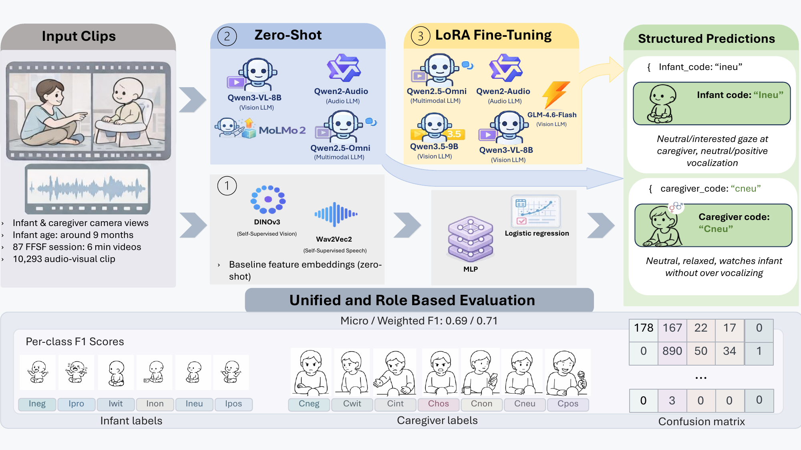
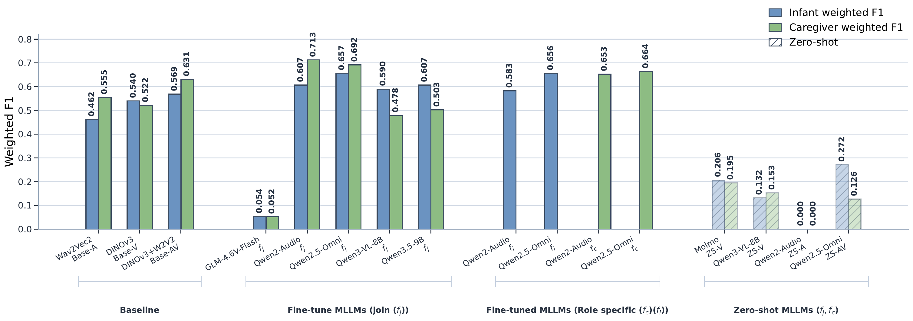
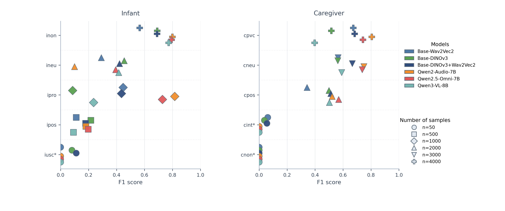
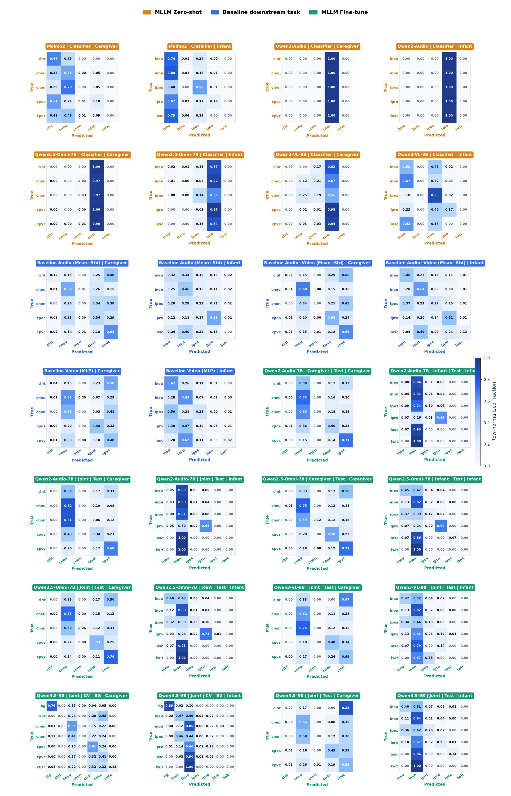

Abstract
Fine-grained behavioral coding of parent–infant interaction is central to developmental and clinical research, but manual annotation with schemes such as the Infant and Caregiver Engagement Phases–Revised (ICEP-R) is time-consuming, costly, and difficult to scale. We investigate whether recent multimodal foundation models and Multimodal Large Language Models (MLLMs) can support automated ICEP-R coding in the Face-to-Face Still-Face (FFSF) paradigm. We present a unified pipeline for video-only, audio-only, and audiovisual prediction, and compare three transfer routes: (1) frozen-feature downstream classification baselines, (2) zero-shot prompting, and (3) parameter-efficient fine-tuning of multimodal models. Across 87 FFSF sessions (~9-month-old infants), multimodal fusion consistently outperforms single-modality approaches, and fine-tuned Qwen2.5-Omni-7B achieves the best results - weighted F1 of 0.657 (infant) and 0.692 (caregiver) - clearly outperforming zero-shot MLLMs and strong frozen-feature (DINOv3 + Wav2Vec 2.0) baselines. Zero-shot MLLMs recover only coarse behavioral structure, indicating that domain adaptation is essential for this clinically specific task.
Pipeline Overview

Three transfer routes are compared under a shared clip inventory, split policy, and evaluation protocol.
Key Results
Best weighted F1 by transfer route (audiovisual, joint prediction unless noted):
| Route | Model | Infant W-F1 | Caregiver W-F1 |
|---|---|---|---|
| Zero-shot | Qwen2.5-Omni-7B (best infant) / Molmo2 (best caregiver) | 0.272 | 0.195 |
| Frozen-feature | DINOv3 + Wav2Vec2 (fused) | 0.569 | 0.631 |
| Fine-tuned (joint) | Qwen2.5-Omni-7B | 0.657 | 0.692 |
| Fine-tuned (joint) | Qwen2-Audio-7B | 0.607 | 0.713 |



Fine-tuning clearly outperforms both zero-shot prompting and frozen-feature baselines, with the
largest gains on moderately-supported classes. The main remaining bottleneck is the long tail of
rare engagement states (e.g. infant iusc, caregiver cint/cnon),
not an absence of usable multimodal signal. Full per-class analysis, confusion matrices, and
qualitative rationale examples are in the paper.
Codebase
This repository contains the full pipeline used in the paper: data preparation, LoRA fine-tuning with LLaMA-Factory, zero-shot annotation generation, frozen-feature baselines, and evaluation.
data-pipeline/- session discovery, manifest building, LLaMA-Factory dataset construction, zero-shot annotation generation (Molmo2, Qwen2-Audio, Qwen2.5-Omni) and ICEP-R prompt/coding guideline documents.finetuning/- theswan_ftpackage: profile-driven CLI for dataset building, cross-validation training, prediction and reporting; frozen-feature (DINOv3 / Wav2Vec 2.0) baselines; SLURM job scripts; model/dataset/profile configs for every model family in the paper.
Quickstart
cd finetuning pip install -r requirements.txt # build a dataset variant, fine-tune, predict, and report - all profile-driven python -m swan_ft dataset build --profile vm_h100 --dataset-spec icep_no_bg_infant_video python -m swan_ft train cv --profile vm_h100 --dataset-spec icep_no_bg_infant_video --model qwen25_vl_7b python -m swan_ft predict cv --profile vm_h100 --dataset-spec icep_no_bg_infant_video --model qwen25_vl_7b python -m swan_ft report cv --profile vm_h100 --dataset-spec icep_no_bg_infant_video --model qwen25_vl_7b
See finetuning/README.md and data-pipeline/README.md for full setup, including
how to configure a local .env (copy from the provided .env.example files -
never commit real credentials or a filled-in .env).
Citation
@inproceedings{withanagedon2026icep,
title = {Automated Behavioural Analysis in Parent-Infant Interactions using Multimodal-Large-Language Models},
author = {Withanage Don, Daksitha and Hallmen, Tobias and M\"uller, Mitho and Kaubisch, Lea Teresa
and G\"unay, Yaren and St\"urmlinger, Linda and Ditzen, Beate and Zietlow, Anna-Lena
and Ehrenthal, Johannes C. and Luna-Jim\'enez, Cristina and Reck, Corinna and Andr\'e, Elisabeth},
booktitle = {Proceedings of the 28th International Conference on Multimodal Interaction (ICMI '26)},
year = {2026},
address = {Napoli, Italy},
publisher = {ACM},
doi = {10.1145/3776574.3831216}
}
Funding & Responsible Use
Funded by the German Research Foundation (DFG) within the SCHWAN Project (project number: 490909448). The systems described are research aids for expert-in-the-loop annotation, not diagnostic tools - they should not replace clinical judgement, and deployment outside the training distribution (different ages, sites, languages, or paradigms) needs additional validation. Fine-tuned LoRA adapters can memorise training examples and are susceptible to membership-inference and model-inversion attacks; any release of trained model weights would require institutional data-protection review.